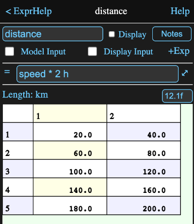
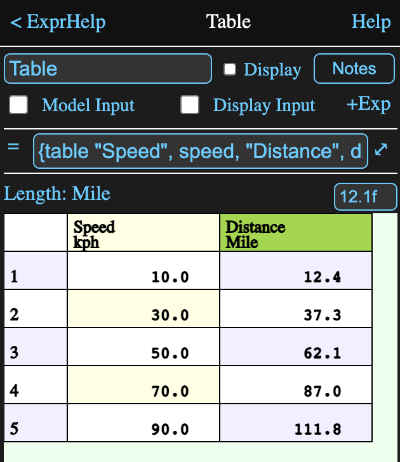

An expression has a single formula representing an equation or constant in your calculation.
For example, the expression below is named "distance" and has the formula
speed * 2 h
where "speed" is another expression which calculates a 5x2 matrix of velocities with the formula:
{redim 1:10 * 10 kph, 2}
The default unit for length when using the SI unit set is metres, but we can make this easier to read by tapping where it says Length: m and selecting km as the display unit from the resulting display. We can also add a format to only show one decimal place.
When checked, this designates that the expression is considered to be an input for the model that contains it.
This means any values it references will be from the parent model, rather than the model that contains it (unless there is no parent model, because the expression is in the root model).
When on, an input field will appear on the information view of the model that owns it. allowing this expressions value to be set directly from that view.
Since expressions are so commonly used, this button is provided to immediately add a new expression without having to go to the diagram. The icon for the new expression will be automatically placed on the diagram.
The formula field has the formula that defines the value of the expression.
Tapping the ⤢ symbol to the right of the field will open a formula editor which has helpful tools for composing a longer or more complex formula.
Tapping on the equal sign to the left of the formula field will cause the expression to be reevaluated. This is normally only pertinent for formulas using something like the {now} function, to force them to replace their cached values. It can also be used to regenerate error and warning dialogs resulting from the calculation.
Below the formula, the unit type (e.g. length) of the value calculated by the formula is displayed, along with the conversion unit (e.g. m, ft etc.) to be used for displaying the value.
If you wish to display the value with a different unit, tap on the unit to open a unit browser where you can select a different one.
Note that setting the display unit does not change the formula or the value it calculates, but merely how it is displayed. However the display unit must match the type of the value calculated by the formula.
If the expression result is a number, then there will be a format field to the right of the unit field. The format string is of the form:
12.4f
which says the field should be 12 characters wide with 4 characters after the decimal point in normal fixed point format.
An e can be used instead of the f for exponential format and a c can be used for a fixed point format with commas.
You can even show numbers with an arbitrary base between 2 and 36. For instance a value could be represented in hex with 14.16r (or the equivalent 14.16x).
Note it is also permissable to omit the size number, i.e. .2f would be fine and the number would just be right justified.
The lower part of the view displays the result of the calculation as a matrix or table. If the display won't fit in the window, you can scroll it both horizontally and vertically by dragging it. Dragging on the row or column headers will scroll rapidly.
Tapping on a cell will show the contents of the cell in a large text area in a new view. For a number value this allows you to copy the value to the clipboard and if a format hasn't been assigned, it will be shown with high precision.
For string values, which might be far larger than can be displayed in a cell, it allows you to see the whole string in a scrollable view as well as copying all or part of it to the clipboard. Tapping the Done button on this view will return to the main view.
If the result of evaluating the formula is a table value, here defined by the formula
{table "Speed", speed, "Distance", distance}
then the unit and format fields will be absent since different columns might have different units.
However if you tap on the column name header in the calculated value grid, the unit and format fields will reappear and apply to that column.
Note that the default unit for a table value is defined by the original table definition.
Parameters that can be accessed in the form a.b where a is the object and b is the parameter.
If the expression is a reference to another object, then that object's parameters will be available.
Similarly if the result of the expression is a table value, then the table value column names will all be parameters.
Other parameters: